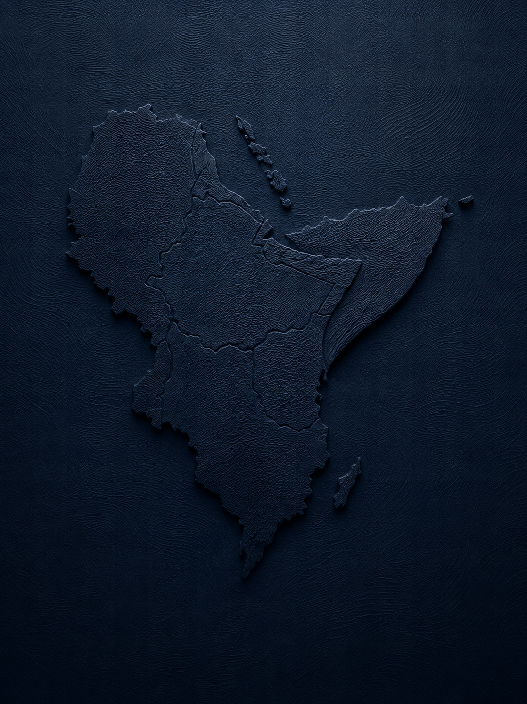

Justice Led by Survivors. Powered by Communities. Built on Evidence.
OJAH is an African-led justice and accountability organization working across the Horn of Africa. We document human rights violations, preserve credible evidence, support survivors and witnesses, and work with justice actors to confront impunity and uphold human dignity.

When violations go undocumented, evidence disappears and survivors are denied a path to justice. OJAH exists to ensure that this does not happen.
Through trusted documentation, evidence preservation, survivor engagement and strategic advocacy, we help transform credible information into opportunities for accountability. Our work is rooted in the belief that those most affected by conflict should be at the center of efforts to advance justice, restore dignity, and prevent future abuses.
What we do
See all programme areas →{{ featured.title }}
{{ featured.summary }}
Our contribution to accountability, in evidence
Across the Horn of Africa, with current focus on Ethiopia
Geographic priorities evolve based on survivor needs, patterns of violations, security conditions, and accountability opportunities.
Partnership for justice and accountability.
OJAH collaborates with leading international and local organizations who share a commitment to truth, justice, survivor dignity, evidence-based accountability and human rights in the Horn of Africa.
Justice requires evidence, courage, care, and collective action.
Organisation for Justice & Accountability in the Horn of Africa.
Washington DC, USA
communications@o-jah.org